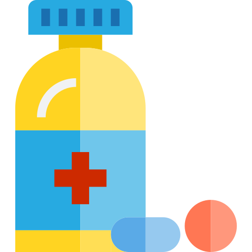

ارتفاع السكر في الدم – العلاج والوقاية
حدوث ارتفاع السكر في الدم بشكل متكرر وعلى المدى الطويل، يمكن أن يؤدي الى مضاعفات شديدة تتلف الأعضاء. لن يسبب ارتفاع السكر في الدم المضاعفات بسبب حدوثه مرة واحدة فقط!
من أجل علاج ارتفاع السكر في الدم، يجب عليك:
-
تحديد الأسباب المحتملة لإرتفاع السكر في الدم
-

الحرص على تناول الأدوية حسب توجيهات الطبيب
-
رطب جسمك بشرب المزيد من الماء
-

كن نشيطاً
فممارسة التمارين الرياضة بانتظام عادة ما تكون وسيلة فعالة للسيطرة على نسبة السكر في الدم. ومع ذلك، يجب التوقف عن ممارسة التمارين الرياضية في حالة ارتفاع السكر في الدم، حيث من الممكن أن يؤدي ذلك الى زيادة نسبة السكر أكثر
-
مراقبة مستويات السكر في الدم بانتظام
-
تعديل النظام الغذائي